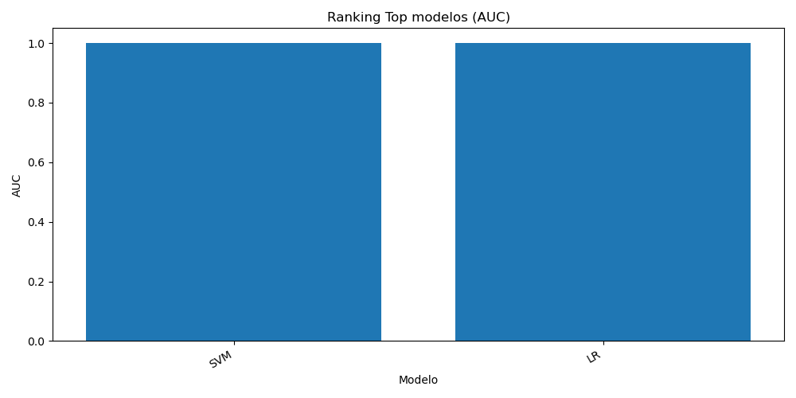
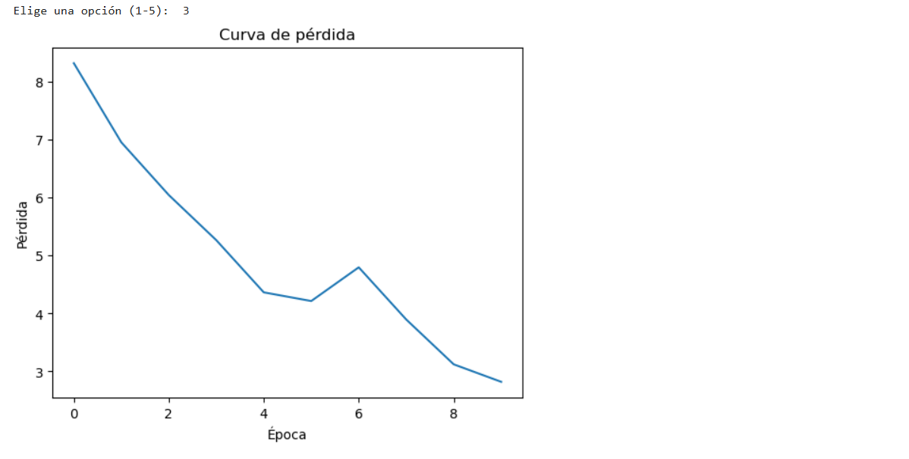

Área técnica
Espacio destinado a análisis, experimentación y evolución de modelos.
Formación base en sistemas informáticos y tecnología, donde se establecen los fundamentos técnicos del perfil profesional.
Optimización de modelos de clasificación para predicción de cáncer, con especial atención al ajuste del umbral clínico.
AUC: 1.0 · Precision: 1.0 · Recall clínico: 1.0
Ver memoriaComparativa entre SVM, regresión logística y Random Forest mediante recall, precision, F1, AUC y balanced accuracy.
Ver métricasAjuste del threshold para reducir falsos negativos y priorizar sensibilidad en un contexto de diagnóstico médico.
Ver thresholdDesarrollo completo del pipeline: limpieza, normalización, entrenamiento, evaluación e inferencia.
Ver códigoDistribuciones, boxplots, correlaciones y relaciones entre variables para comprender el comportamiento del dataset.
Ver estadísticaPaneles comparativos y ranking visual de modelos por AUC.

Ver panelProyecto de visión artificial basado en redes neuronales convolucionales (CNN) para la detección automática de fracturas óseas.
Accuracy: 0.76 · Mejor CV: 0.79 · F1 Macro: 0.75
Ver memoriaMás de 9000 radiografías clasificadas con técnicas de augmentación para mejorar la generalización del modelo.
Ver detallesPreparación de datos, balanceo de clases, entrenamiento y evaluación del modelo.
Preprocesado Modelo CNNMétricas de clasificación, matriz de confusión y validación cruzada.
Ver pipeline técnico
Evolución de la pérdida durante el entrenamiento del modelo.
Análisis técnico y propuesta de mejora para un sistema de procesamiento de lenguaje natural aplicado a asistentes de voz.
NLP · Transformers · ASR/TTS · Arquitectura de sistemas
Ver documento completoIdentificación de los principales retos en NLP: representación del texto, contexto, ambigüedad y variabilidad lingüística.
Ver detalleIntegración de embeddings, modelos Transformer (BERT/GPT) y sistemas de voz (Whisper, Tacotron).
Ver detalleEvaluación del impacto en experiencia de usuario, recursos necesarios y riesgos técnicos del sistema.
Ver detalleRepositorio estructurado con memorias, arquitectura, modelos, inferencias y anexos técnicos.
Documento completo del TFM con metodología, resultados y conclusiones.
Ver memoriaEstructura técnica del portfolio, despliegue cloud y organización del repositorio.
Ver arquitecturaArchivos serializados del modelo, normalizador y calibrador.
Modelo Normalizador Calibrador